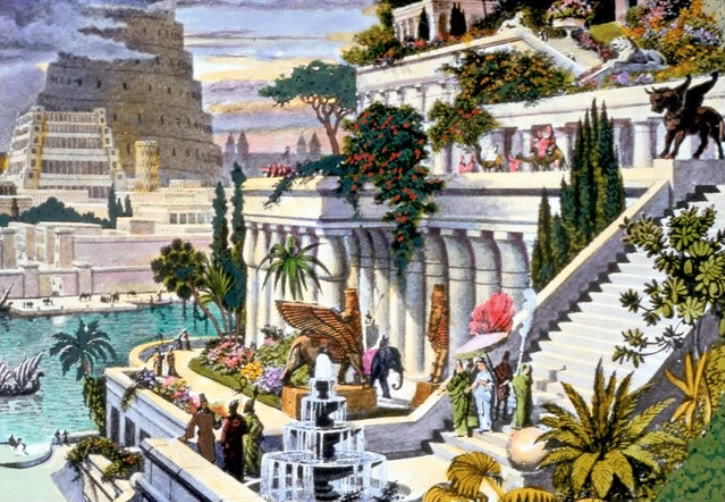

Kabantieji Babilono sodai (arba Semiramidės sodai) – sodų kompleksas, pastatytas senovės mieste Babilone, Eufrato pakrantėje. Laikomi vienu iš senovės septynių pasaulio stebuklų. Neišlikę. Manoma, kad šie sodai sukurti apie 600 m. pr. m. e. Pasak senovės graikų legendos, sodai buvo sukurti, nes karaliaus Nabuchodonosaro II žmona Amytis ilgėjosi savo gimtųjų namų Medijoje.
